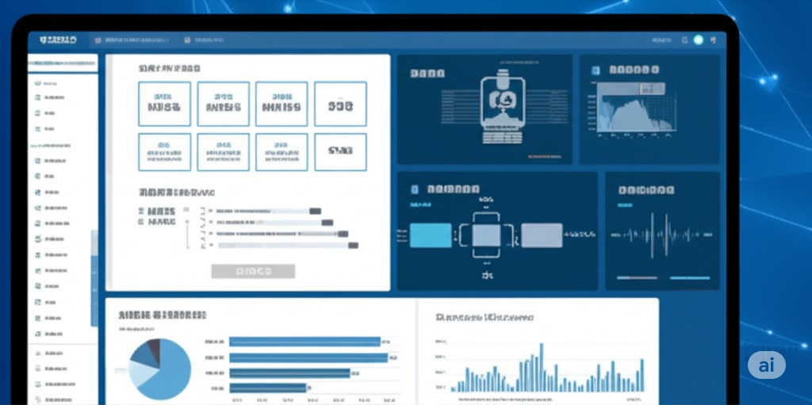

1. 线上需求调研
使用「公众号」/「问卷星」发放调研问卷，收集员工对活动形式的偏好（如线上知识竞赛、短视频创作赛等）。
2. 方案数字化呈现
通过「腾讯文档」「飞书」协作编辑活动方案，嵌入时间轴甘特图、预算分配表等可视化工具，便于工会委员远程协同的模板，通过「公众号」公布动态方案书，包含活动规则、奖励机制、参与入口二维码。
公众号功能集成+公司内网+公司网站等互联网全平台宣传发布，设立职工风采、最新资讯、法律法规、公益活动、心理健康等核心栏目，整合国内主流互联网平台能力，兼顾高速公路行业分散作业特性，可通过低成本SaaS工具快速落地，结合AI智能体应用以及AIGC内容生产，实现工会工作从传统线下向智能化的转型升级。
使用「公众号」/「问卷星」发放调研问卷，收集员工对活动形式的偏好（如线上知识竞赛、短视频创作赛等）。
通过「腾讯文档」「飞书」协作编辑活动方案，嵌入时间轴甘特图、预算分配表等可视化工具，便于工会委员远程协同的模板，通过「公众号」公布动态方案书，包含活动规则、奖励机制、参与入口二维码。
在「公众号」/「公司内网」推送「强提醒通知」，关联活动报名链接和倒计时提醒。
对活跃度低的员工，启用「微信」定向推送个性化邀请。
使用「AIGC」设计自动化海报、物料、视频。
在公众号「知识库」建立活动专区，分类存储学习资料、操作指南、范例视频，设置互动学习栏目，开发「AI智能体」「答题闯关」，集成安全规范题库，员工权益科普，法律知识科普。

设计「激励系统」：对活动参与积极分子，在平台予以展示，结合公司规章制度与考核机制对相关人员予以激励。
在「公众号」，以及全网对员工发布活动信息，以及活动总结的相关高速工会话题的，按传播效果予以激励。
使用「腾讯文档」「飞书」智能表格，设置自动化填报流程：照片/视频直接上传至指定云相册，报表数据自动汇总。
使用平台后台数据统计，通过「飞书」智能表格生成多维看板：呈现活动效果的可视化等。
| 环节 | 核心工具 |
|---|---|
| 协同办公 | 微信/内网平台、 腾讯文档（协作）、 飞书多维表格（数据管理） |
| 内容生产 | AIGC服务、 剪映、 DeepSeek、 问卷星 |
| 互动传播 | 微信、 抖音、 公众号、 视频号、 公司内网、 公司网站、其他 |
| 数据分析 | 平台后台数据统计、 飞书智能表格可视化 |